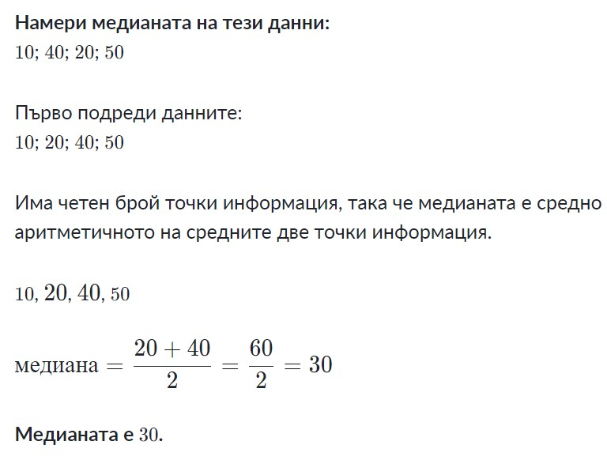
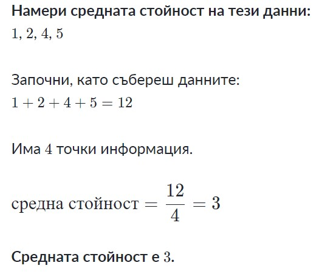
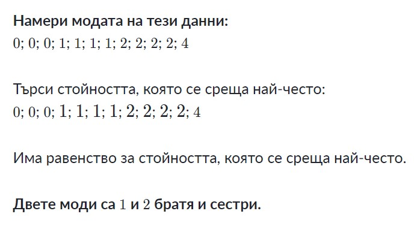

Статистика
Възникване на статистиката
Още в древността хората са се нуждаели от определени ьнания, които днес наричаме статистически. Има сведения,
че около 3500 години пр.н.е. в Египет е било извършвано преброяване на населението. Статистиката като наука възниква по-късно,
като много автори я свързват с името на немския учен Херман Конринг, живял през XVIIв. и въвел през 1600г. нова университетска дисциплина,
наричана "Държавоведение".

Статистика се нарича наука за събиране, оргнизация, представяне, анализ и интерпретация на данни с цел да се подпомогне вземането на решение. Ако на всеки един елемент от дадена статистическа съвкупност се съпостави числова, величина "х"(значението на изучавания признак), множеството от числата "х" се нарича генерална съвкупност. Частта от генералната съвкупност, избрана за проучване, се нарича извадка
-
Медианата е числова сройност, която разделя ранговия ред на две равни части(т.е. на групи от по 50% от редиците). Тя се нарича още средна по положение.. Означава се с Ме. 
-
Средната аритметична стойност е сумата от индивидуалните значения на всички единици от съвкупността, разделена на техния брой. Означава се с х като му сложим една черта отгоре. 
-
Мода е най-често срещаното значение на признака в съвкупността. Тя се нарича още средна величина на гъстотата. Означава се с Mo. 